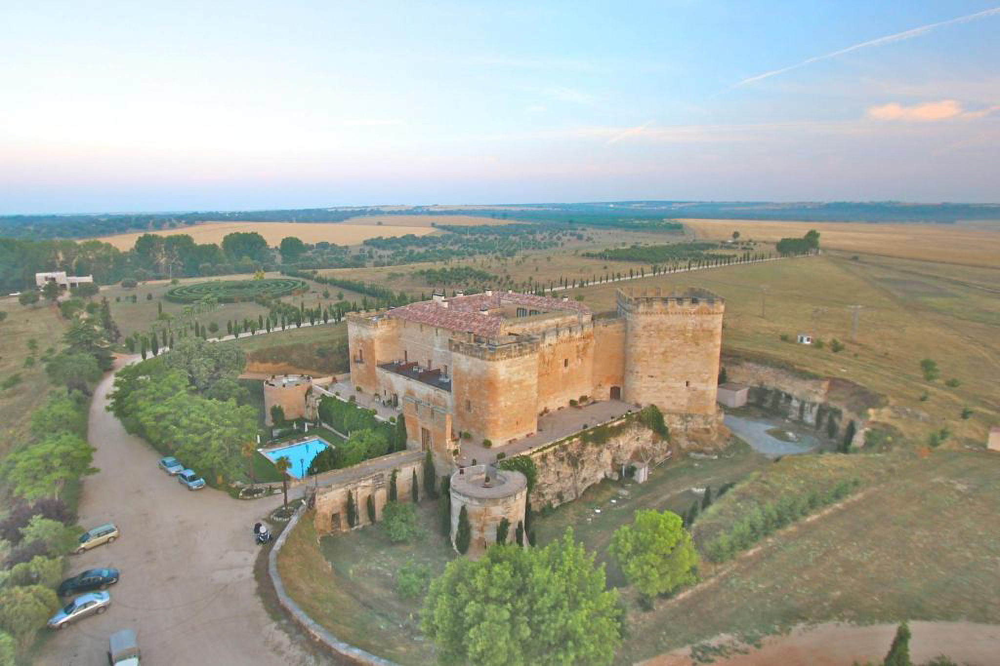

¡Nos casamos!
Sábado 16 de Mayo de 2026
Castillo del Buen Amor
(Topas, Salamanca)

¡Ya era hora!
Ya llevamos unos años diciendo que "pronto, pronto", así que hemos decidido que el próximo 16 de Mayo de 2026 nos casamos y nada nos hace más ilusión que pasar el día con vosotros.
Más abajo os dejamos toda la información. Únicamente os pedimos que le deis al botón de "Confirmar asistencia" ahí arriba y nos contestéis un par de preguntas.
Nos vemos dentro de nada, ¡un abrazo!
La logística
🛏️ Alojamiento 🛏️
La noche del sábado tendremos las habitaciones del castillo disponibles, aunque son limitadas. Si os interesa quedaros en el castillo, poneos en contacto con nosotros cuanto antes. Y si necesitáis información sobre otros hoteles en Salamanca, podéis preguntarnos.
🚌 Autobuses 🚌
El Castillo está a unos 20 minutos de Salamanca en coche (25km), así que el día de la boda tendremos autobuses disponibles tanto para ir como para volver.
Para ir, saldrá a las 17:15 de la plaza de Gabriel y Galán, frente a la biblioteca.
Para volver habrá un autobús a la 1:00 y a las 4:30, os dejará en el mismo sitio.
Si crees que vas a necesitar autobús (para ir, para volver o ambos) márcalo en el formulario de confirmación.
🚆 ¿Vienes desde fuera? ✈️
Si no conocéis Salamanca y queréis pasar el fin de semana en la ciudad, podéis llegar el viernes y aprovechar para dar un paseo por la Plaza Mayor y la Rúa hasta la Plaza de Anaya, ya que la ciudad tiene uno de los cascos históricos más bonitos durante la noche. Al día siguiente, por la mañana antes de la boda, podéis ver la mayor parte de la ciudad: visitar la fachada de la Universidad, entrar en la(s) catedral(es), pasear frente a la Casa de las Conchas o bajar hasta el puente romano.
El día del evento
Sábado 16 de Mayo de 2026
💍 La ceremonia 💍
A las 18:00 os esperamos en el Castillo del Buen Amor para comenzar el día con la ceremonia civil.
🍸🎻 Cóctel 🎻🍸
El cóctel será en los patios del castillo. Algo de beber, ir abriendo boca, y tiempo para ponerse al día con familiares y amigos.
🍽️ Cena 🍽️
Dejad hueco en el estómago, que después pasamos al interior de la carpa para continuar con la cena.
🎸💃🕺 La fiesta 🍻🎶
¡Y comienza la barra libre! Música y hasta que el cuerpo aguante.
¿Alguna duda?
Si tenéis cualquier pregunta no dudéis en escribirnos, pero vamos dejando aquí algunas preguntas que han surgido.
¿Puedo llevar acompañante?
¿Has conocido a alguien en el último momento y estás seguro que es la persona de tu vida? ¡Pues qué mejor momento para presentarlo a todo el mundo! Háznoslo saber en el formulario de confirmación.
¿Dónde puedo aparcar?
Si vienes en coche y nos prometes que no te vas a dejar llevar demasiado por la fiesta... en el Castillo del Buen Amor no hay problema para aparcar.
¿La boda será en interior o exterior? ¿Hará frío? ¿Qué me pongo?
Si el tiempo acompaña el cóctel será en exterior y la cena en interior. Algunas zonas del castillo no son especialmente cómodas con tacones de aguja, así que considera opciones cómodas (y quizá unas zapatillas para bailar!).